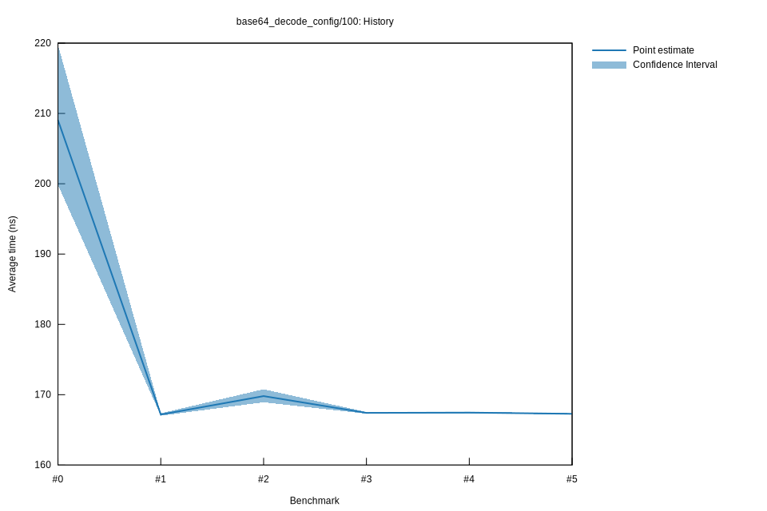

# 52022-10-16T20:09:25+03:00
|
Lower Bound |
Estimate |
Upper Bound |
| Value: |
167.20ns |
167.28ns |
167.36ns |
| Throughput: |
775.70MiB/s |
775.34MiB/s |
774.97MiB/s |
| Change in Value: |
-0.2238% |
-0.1305% |
-0.0337% |
| Change in Throughput: |
+0.2243% |
+0.1306% |
+0.0337% |
No change in performance detected.
# 42022-10-16T17:28:30+03:00
|
Lower Bound |
Estimate |
Upper Bound |
| Value: |
167.35ns |
167.45ns |
167.57ns |
| Throughput: |
775.04MiB/s |
774.54MiB/s |
774.00MiB/s |
| Change in Value: |
-1.5248% |
-0.4923% |
+0.0925% |
| Change in Throughput: |
+1.5484% |
+0.4947% |
-0.0925% |
Change within noise threshold.
# 32022-10-15T17:19:12+03:00
|
Lower Bound |
Estimate |
Upper Bound |
| Value: |
167.30ns |
167.41ns |
167.53ns |
| Throughput: |
775.26MiB/s |
774.73MiB/s |
774.18MiB/s |
| Change in Value: |
-1.6810% |
-0.6904% |
+0.5933% |
| Change in Throughput: |
+1.7097% |
+0.6952% |
-0.5898% |
Change within noise threshold.
# 22022-10-15T16:53:24+03:00
|
Lower Bound |
Estimate |
Upper Bound |
| Value: |
168.92ns |
169.80ns |
170.77ns |
| Throughput: |
767.79MiB/s |
763.83MiB/s |
759.48MiB/s |
| Change in Value: |
+0.9191% |
+1.4433% |
+2.2071% |
| Change in Throughput: |
-0.9107% |
-1.4227% |
-2.1594% |
No change in performance detected.
# 12022-10-08T17:30:11+03:00
|
Lower Bound |
Estimate |
Upper Bound |
| Value: |
167.01ns |
167.18ns |
167.35ns |
| Throughput: |
776.58MiB/s |
775.82MiB/s |
775.00MiB/s |
| Change in Value: |
-32.860% |
-29.560% |
-26.053% |
| Change in Throughput: |
+48.942% |
+41.965% |
+35.232% |
No change in performance detected.
# 02022-10-08T17:10:54+03:00
|
Lower Bound |
Estimate |
Upper Bound |
| Value: |
199.86ns |
209.06ns |
219.76ns |
| Throughput: |
648.94MiB/s |
620.40MiB/s |
590.18MiB/s |